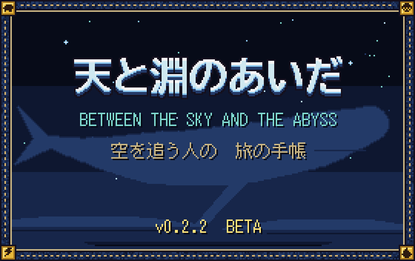
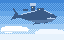
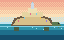
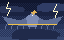
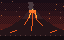

BETWEEN THE SKY AND THE ABYSS 別案 B（紙の手帳）Alt B (paper notebook)
天と淵のあいだ
空を泳ぐ巨神の背に乗り、世界の底の謎へ。建築も採掘も、いつものままに。Climb onto titans that swim through sky, sea, storm and earth. Build and mine as you always do.

旅の手帳より 一From the notebook: one
巨神は四体。空を泳ぐもの、海を歩くもの、嵐をまとうもの、地を泳ぐもの。その背は、そのままダンジョンです。Four titans: one swims the sky, one walks the sea, one wears the storm, one swims the earth. Their backs are the dungeons.
二Two
5 つの木と旅人、36 の技。天職を選び、刻印で技の形を変え、武器と噛み合わせます。Five trees plus the Wayfarer, 36 skills. Pick a calling, reshape skills with runes and match them to your weapon.
三Three
6 人までのパーティ。倒れても大事な品は残ります。チャットは流れず、画面の決まった場所に知らせが出ます。Parties of up to six. Key items survive death. No chat spam; notices appear in fixed places on screen.
四つの背Four backs



